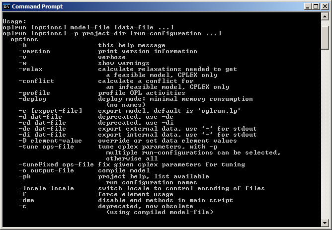
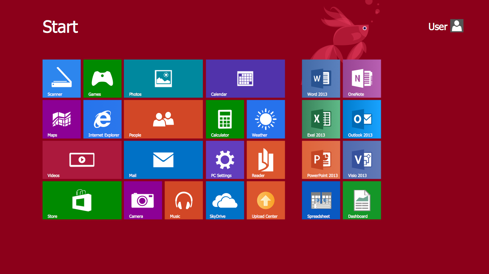

Command Line
- Only need to use the keyboard to navigate
- To perform a task you need to execute only a few lines
- Invented way before GUI
- Faster if you prefer just typing
- Users have more control because with a one-line command you can copy a specific file from one location to another
- You cannot view multiple things at once
- Uses less system resources than GUI
- Command line can't do everything that GUI can

GUI
- Need to use both a mouse and keyboard to navigate and control
- Uses lots of memory and CPU
- User-friendly because you don't need to memorize the command lines, you can just pick and choose icons
- New users tend to choose GUI because is more visually intuitive
- You can't always use GUI, you need to use Command line for advanced tasks
- You can view and control multiple programs at the same time
- Requires more system resources
- GUI can do anything Command line can do